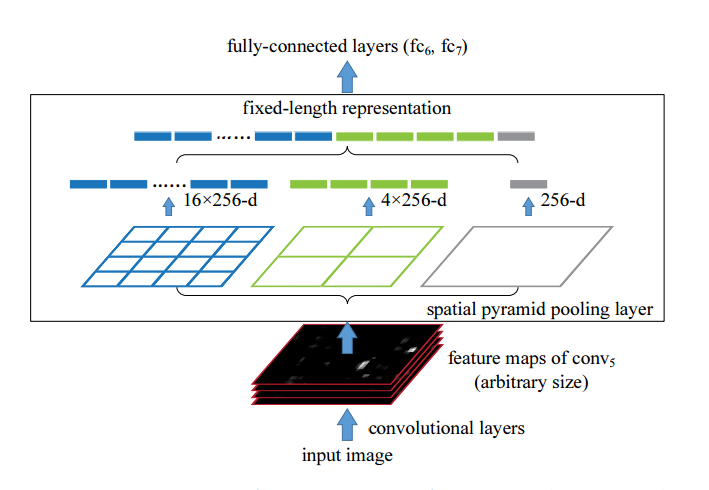
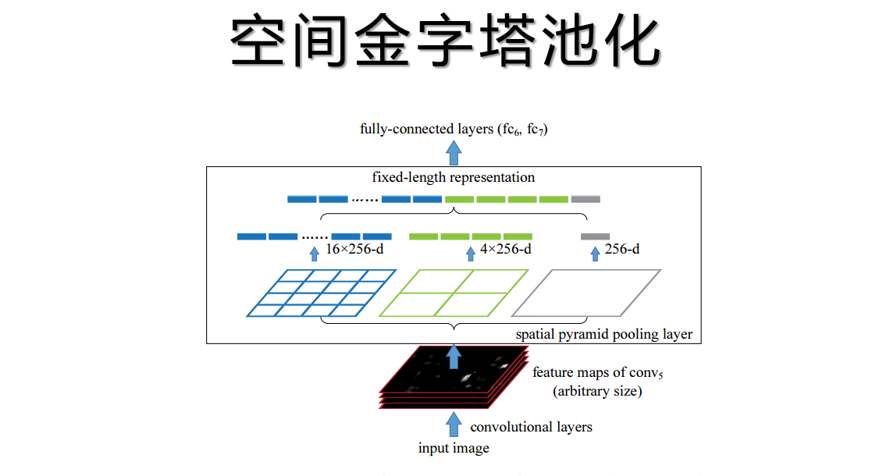
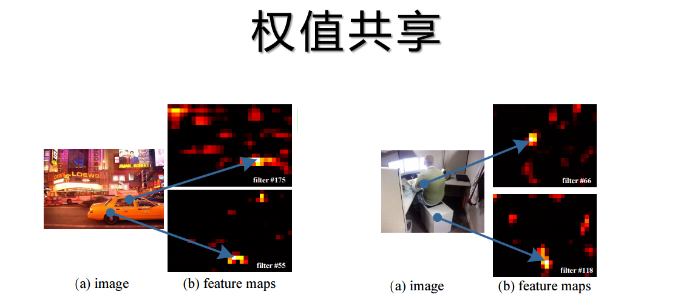
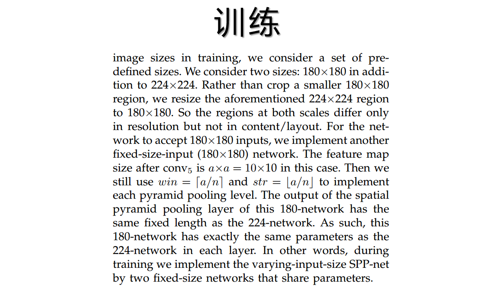

哈喽大家好，我是蒙特卡洛家的树。RCNN横空出世之后，人们开始把目标检测的重心放在了神经网络上。但是RCNN有个非常明显的缺点，就是速度慢，以为有2000个候选框需要计算，所以跑了2000次前向传播。这样跑一张图片就需要五十多秒。何凯明老师提出了一种新的思想，大大的提升了性能，这个方法叫做空间金字塔池化。
这个空间金字塔池化使用了比例池化,可以不关心输入大小,也能够输出固定维度的特征,从而代替全连接层.其实就是规定把图片分成几份，传统的池化是规定多少大小为一份，而spp是直接约定分成几份，至于一份的大小就可变了。 另外还有一个改进是特征共享，原先2000个proposal分别进入神经网络去算出2000个特征，这样效率是非常低下的。经过实验spp证明了只需要把原图走一遍神经网络，得出最后一个featuremap，因为有了空间金字塔池化层，不管输入是什么输出大小都是一样的，所以这时候把最后那层featuremap按照比例裁剪，再分别丢进池化层输出特征

先说比例池化，我们可以看到，图中最后那个featuremap经过了三个池化层，,第一个池化层为4*4,不是指的卷积核大小是4*4,而是将输入的feature图分成4*4的做池化,例如使用最大池,那么每个区域取最大值,这样就能输出16个数,这16个数分别是每个区域的最大值,这就是这个池化层输出的结果.第二个池化层为2*2,那么同样这一层会输出4个数,第三个池化层为1*1,那么会输出一个数,这16+4+1=21个数就是要输出的21个特征.因为他是按照比例去输出的,所以不需要关心图像大小,只要到最后还能被切成这么多块就可以了.

正是因为有了这一特性，我们可以不用关心输入大小了，所以假设上一层卷积输出的featuremap中间随便截取一个小框也能够输入到这个池化层里面。所以我们可以把整张图直接丢进神经网络，算出整张图的featuremap，然后再把候选框那个位置按照比例在featuremap上截取下来，依然能够输入到空间金字塔池化层。我们看图，左边这个车轮在这里，对应的featuremap里的这里，假设我们proposal出来的区域有这个车轮，那么我们直接把他在featuremap上对应的这个区域截取下来，输入到池化层就行了。这样计算量大大的减小了，因为2000个proposal都是从这一个featuremap上抠下来的特征，相当于整个流程只做了一次前向传播。

由于输入大小可变这个特性,spp训练的时候就可以把训练图片按比例缩放,这样可以训练不同尺度的图片,相当于增加了数据量.训练多尺度的时候首先规定几种默认尺度,如224的和180的,先手动设置polling层,训练224的一个回合,然后在更改polling层训练180的，这样来回交替，据验证效果要比一个尺度的更好。
Author：keefe
原文链接：http://blog.357573.com/2020/01/05/%E7%9B%AE%E6%A0%87%E6%A3%80%E6%B5%8B-SPPNet/
发表日期：January 5th 2020, 9:15:40 pm
更新日期：January 6th 2020, 8:46:41 am
版权声明：本文采用知识共享署名-非商业性使用 4.0 国际许可协议进行许可
-
Next Post目标检测-Fast RCNN
-
Previous Post目标检测-RCNN